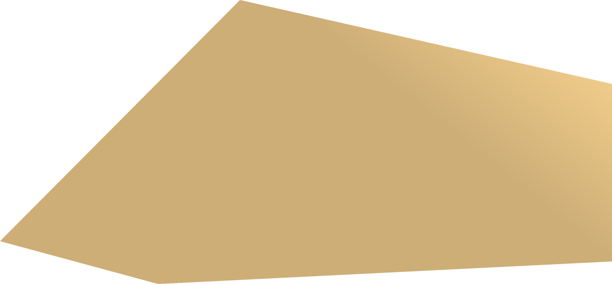
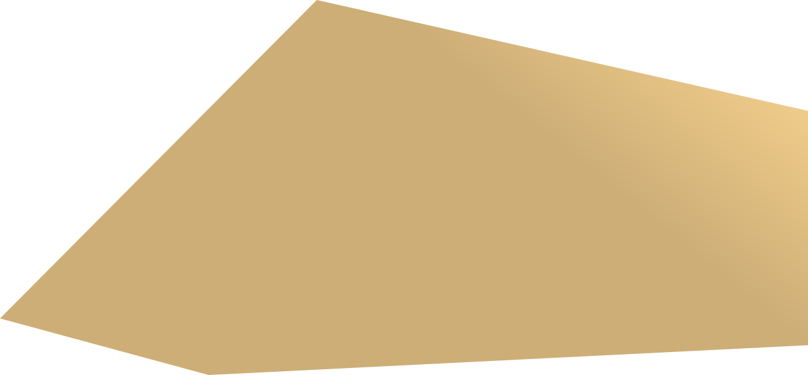
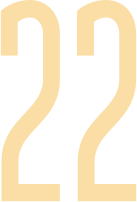
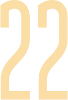

 



Проекты развития
Основные усилия «Селигдар» планирует сконцентрировать на крупных проектах развития и освоении новых месторождений, что позволит вывести бизнес Холдинга на новый уровень производства: 20 т золота и 16 тыс. т олова к 2030 году.
Помимо целевых уровней производственных показателей, в Стратегии определены требования к развитию и поддержанию производственных активов, производительности и эффективности производства, развитию рудной базы и автоматизации процессов, цифровизации бизнеса.
В течение 2022 года инвестиции Холдинга направлялись на реализацию существующих проектов развития в Республике Саха (Якутия), Хабаровском крае и реализацию новых проектов. Среди основных можно отметить проекты развития Хвойный и Самолазовский в Республике Саха (Якутия) и проекты Солнечный и Правоурмийский в Хабаровском крае. Из новых направлений — продолжение стадии геологоразведки и технологических исследований на месторождениях Кючус (золотодобывающий дивизион, Республика Саха (Якутия)) и Пыркакайские штокверки (оловодобывающий дивизион, Чукотский АО). Среди завершающихся проектов можно отметить запуск в опытно-промышленную эксплуатацию в 2022 году золотоизвлекательной фабрики производственного комплекса Поиск (Алтайский край), выход фабрики производственного комплекса Рябиновый (Республика Саха (Якутия)) на уровень мощности в 1,6 млн т в год, выход на проектные показатели по загрузке руды золотоизвлекательной фабрики производственного комплекса Сининда (Республика Бурятия).
На всех производственных площадках продолжились программы модернизации и реконструкции производственных фондов, а также новое строительство, в том числе в направлении улучшения условий быта работников (социальные проекты), а также для обеспечения безопасности ведения работ, минимизации воздействия на окружающую среду.
Проекты развития золотодобывающего дивизиона
Производственный комплекс Рябиновый
На производственном комплексе Рябиновый реализуется проект увеличения мощности золотоизвлекательной фабрики. Основные направления работ в 2022 году были связаны с увеличением производительности фабрики до 1,6 млн т руды в год, с работами по модернизации хвостового хозяйства (увеличением производительности цеха полусухого складирования хвостов обогащения), с увеличением производительности участка кучного выщелачивания по сорбции. Затраты в 2022 году по всем объектам производственного комплекса составили около 620 млн руб.
В 2023 году продолжатся мероприятия по постепенному увеличению мощности золотоизвлекательной фабрики производственного комплекса до уровня переработки 1,8 млн т руды в год. В силу изменения окончательных технических решений и с учетом планов по дозакупке оборудования сроки увеличения мощности фабрики были продлены до 2025 года. Общая оценка затрат проекта составляет около 1,2–1,5 млрд руб., часть из которых была инвестирована на этапе вывода проекта на текущую мощность в 1,6 млн т в год.
С учетом планового снижения содержания золота в руде увеличение производственной мощности позволит сохранить объемы производства на достигнутом уровне до завершения отработки месторождения.
Производственный комплекс Самолазовский
На производственном комплексе Самолазовский идет реализация проекта строительства установки термоподготовки руды.
«Селигдар» принял решение о расширении участка путем строительства второй очереди проекта с плановой мощностью до 300 тыс. т сульфидной руды в год (окончательная производственная мощность установки будет утверждена после завершения всех проектных мероприятий). В 2023 году будет продолжено проектирование, будут финализированы проектные решения, решается вопрос в отношении обеспечения топливом новой установки.
С учетом нестабильной ситуации на рынке золота в 2022 году сроки реализации проекта строительства смещены на более поздние (2024–2025 годы).
Реализация проекта позволит расширить производственную мощность данного направления до 800–850 кг золота в пиковые годы.
Объем инвестиций в проект в 2022 году составил около 55 млн руб., суммарные затраты составили 550 млн руб.* Общие инвестиции во вторую очередь на текущий момент оцениваются в сумму около 1,5 млрд руб. и будут уточнены в зависимости от принятой схемы газообеспечения.
* Отличия с ранее опубликованными данными связаны с дополнительными инвестициями в обеспечивающую инфраструктуру, не входившую ранее в периметр проекта.
Производственный комплекс Поиск
Реализуется проект фабрики с установкой по переработке кварц-карбонатных руд на месторождении Мурзинское в Алтайском крае. Установка была запущена в опытно-промышленную эксплуатацию в 2022 году и позволила вовлечь в переработку кварц-карбонатные упорные руды, что дополнительно дает до 300 кг золота в год и позволяет продлить работу объекта в перспективе ближайших трех лет.
Общий объем инвестиций в проект в 2022 году составил 410 млн руб. Суммарный объем инвестиций предполагается на уровне 1,0–1,1 млрд руб. с учетом модернизации вспомогательных объектов.
На 2023 год намечены работы по модернизации инфраструктуры (социальные объекты, энергетическая и складская инфраструктура, объекты автоматизации и обеспечения безопасности). В перспективе будет прорабатываться вопрос по увеличению сквозного извлечения золота, что дополнительно потребует инвестиций в период до 2024 года, точная сумма которых будет определена по мере проработки технологических решений.
Производственный комплекс Сининда
На производственном комплексе Сининда после запуска в эксплуатацию золотоизвлекательной фабрики и установки переработки хвостов гравитации идет реализация проекта модернизации и увеличения мощности переработки.
С 2021 года на участке осуществляются комплексные мероприятия по техническому перевооружению, меняется парк горной техники. Проводятся мероприятия по росту производительности золотоизвлекательной фабрики до 24 т в час, что позволит увеличить объем переработки руды и производства золота.
Суммарные затраты по проекту в 2022 году составили 290 млн руб. В перспективе 2023 года планируется вложить дополнительно 200 млн руб. на завершение модернизационных мероприятий, что позволит увеличить извлечение золота. С учетом доразведки месторождения ожидается, что ресурсов хватит как минимум на 7 лет работы с производством на уровне 300 кг золота в год.
Стратегические проекты
Строительство ЗИФ на месторождении Хвойное
Проект включает в себя строительство золотоизвлекательной фабрики на месторождении Хвойное в Алданском районе Республики Саха (Якутия).
По состоянию на конец 2022 года проект находился на стадии строительства: выполнена планировка участка, запущена пробирно-аналитическая лаборатория «Алдан», построенная в рамках реализации проекта, построены общежития для сотрудников и объекты социально-бытовой инфраструктуры. Ведутся работы по строительству остальных инфраструктурных объектов и коммуникаций (межплощадочные дороги, объекты вспомогательной инфраструктуры и линий электропередач и водовода).
Инвестиции в проект в 2022 году составили 2,85 млрд руб.
В 2023 году планируются выбор генподрядной организации и активные строительные работы основных производственных объектов, которые продлятся более 12 месяцев. Запуск объекта намечен на конец 2024 года, проектная мощность — до 3 млн т руды в год. После запуска фабрика позволит нарастить объем производства золота на 2,5 т в год и будет обеспечена запасами как минимум на 10 лет.
Освоение месторождения Кючус
Данный проект открывает новую стадию развития Холдинга: ожидаемый объем производства после выхода на проектную мощность составляет не менее 10 т золота в год.
Запасы месторождения Кючус составляют 175 т золота, после проведения доразведки ожидается прирост до 250–280 т.
В 2022 году «Селигдар» активно проводил геологоразведочные работы на месторождении. Была выполнена большая часть объема работ по бурению скважин, проведен отбор технологических проб для картирования, изучался и документировался керн. Суммарные затраты по всем направлениям работ составили около 1,6 млрд руб.
В 2023 году планируется начать работы по технологическим испытаниям руд, а также завершить геологоразведку. Общие затраты на стадию геологоразведки с момента начала работ оцениваются в 2,8 млрд руб.
Конфигурация будущего проекта будет принята по результатам завершенных технологических исследований до 2024 года.
Проекты развития оловодобывающего дивизиона
Производственный комплекс Солнечный
В 2022 году был реализован проект по рентген-абсорбционной сепарации, который позволил подавать усредненную по содержанию металла руду на переработку для достижения более высокого извлечения металла.
Другим важным направлением стала реализация проекта шеелитовой флотации, что позволило расширить ассортимент выпускаемой продукции и производить вольфрамовый концентрат.
Был модернизирован цикл рудоподготовки, расширен фронт обогащения путем установки дополнительных концентрационных столов. Были запущены линия доводки оловянного концентрата для снижения количества вредных примесей в оловянном концентрате и станция приготовления флокулянтов для стабилизации качества технологического процесса.
Объем инвестиций в модернизацию производственного комплекса в 2022 году составил
557 млн руб. Окончание проекта модернизации фабрики запланировано на 2023 год.
В 2023 году планируется ввод в эксплуатацию сгустителя для обеспечения замкнутого водооборота на фабрике, внедрение на стадии обогащения шламового цикла винтовых сепараторов, ввод в эксплуатацию центробежных концентраторов на хвостовом цикле обогащения, установка высокоградиентного магнитного концентратора в схеме доводки оловянного концентрата для дальнейшего снижения количества вредных примесей в концентрате. Планируемый объем инвестиций в 2023 году составляет 733 млн руб.
Производственный комплекс Правоурмийский
В 2022 году продолжилось строительство объектов инфраструктуры — автомобильной дороги между железнодорожной станцией Сулук и производственным комплексом, логистической базы на станции Сулук, главной вентиляторной установки, общежития, склада взрывчатых материалов.
Для достижения более высокого извлечения металла был запущен проект по внедрению рентген-абсорбционной сепарации.
Была произведена замена концентрационных столов в цикле доводки флотогравитации.
Объем инвестиций в развитие и модернизацию производственного комплекса в 2022 году составил 761 млн руб.
Общая сумма инвестиций оценивается в 9,7 млрд руб., срок реализации проекта рассчитан до 2028 года.
В 2023 году планируется реализовать проект медной флотации и расширить продуктовую линейку производственного комплекса, завершить строительство объектов инфраструктуры. Помимо этого, планируется дальнейшая модернизация, направленная на повышение извлечения металла, — установка батареи гидроциклонов, центробежных концентраторов и флотационных машин. Планируемый объем инвестиций в 2023 году составляет 714 млн руб.
Стратегический проект Пыркакайские штокверки
Проект освоения месторождения Пыркакайские штокверки в Чукотском автономном округе является новой фазой развития оловодобывающего дивизиона. Балансовые запасы месторождения составляют 243 тыс. т олова.
Геологоразведочные работы на месторождении идут с 2021 года. В 2022 году была отобрана укрупненно-лабораторная технологическая проба окисленной и полуокисленной руды, и начался отбор коренной укрупненно-лабораторной пробы методом колонкового бурения. Для разработки технологического регламента были начаты комплексные исследования отобранных проб.
Объем инвестиций в 2022 году составил 133 млн руб.
В 2023 году планируется выполнить отбор укрупненно-лабораторной технологической пробы коренной руды, завершить комплексные технологические исследования с разработкой технологического регламента, выполнить предварительное исследование и начать разработку ТЭО проекта. Планируемый объем инвестиций в 2023 году составляет 238 млн руб.
Перспективный проект создания металлургического производства
Реализация проекта создания металлургического производства позволит запустить полный цикл производства металлического олова в Хабаровском крае, тем самым создав вертикально-интегрированный кластер по добыче, переработке и выпуску металлического олова. Металлургическое производство полного цикла позволит повысить сквозное извлечение металла до уровня 75–80% и перерабатывать концентрат низкого качества с содержанием олова 10%.
Проектом предполагается производство металлического олова, вольфрамосодержащего и медного продукта, продуктов с попутными компонентами.
В 2023 году планируется разработать технологию переработки оловянных концентратов, выпускаемых на производственных комплексах оловодобывающего дивизиона, а также концентратов из руд месторождения Пыркакайские штокверки.